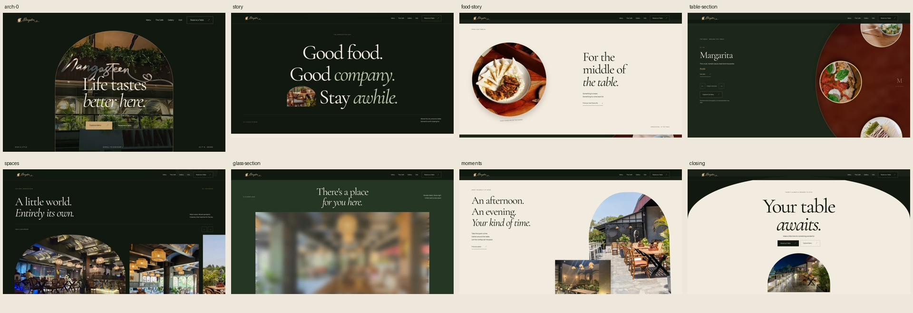
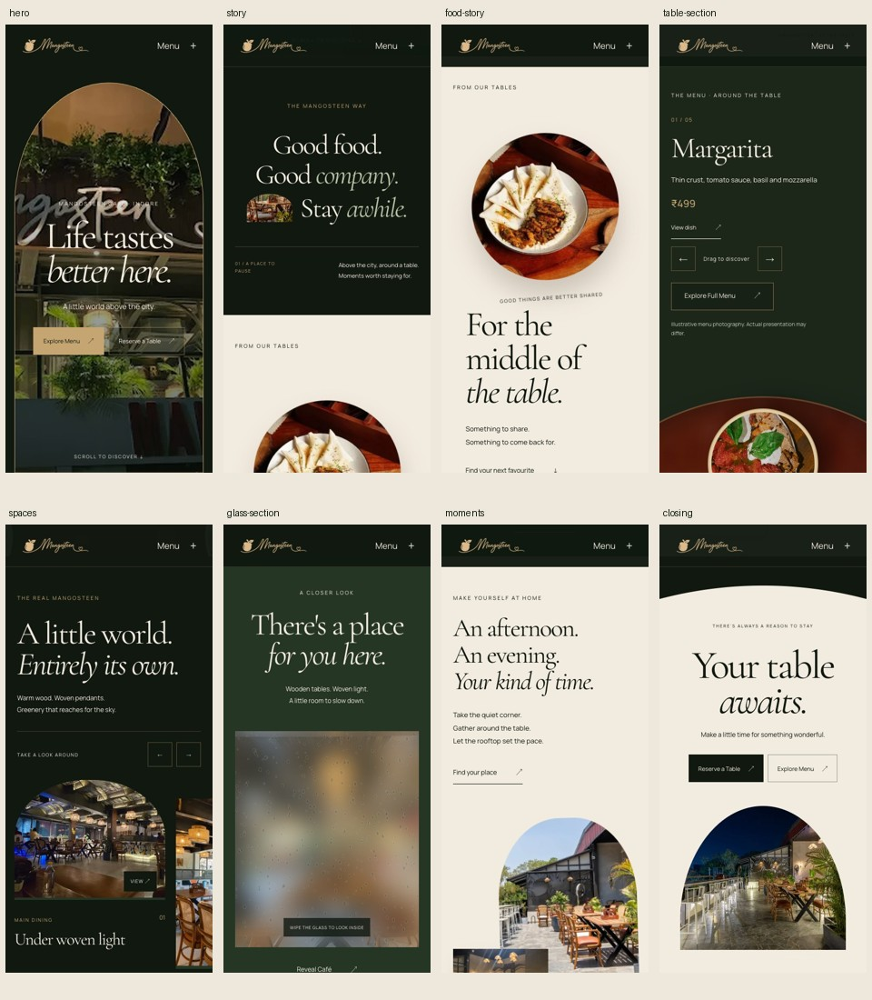
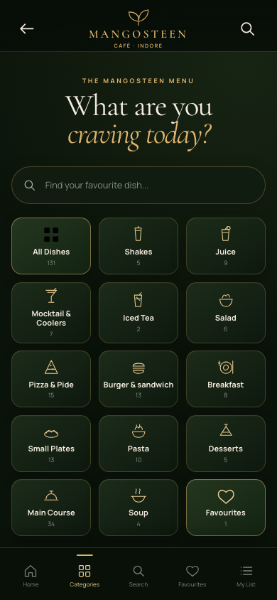
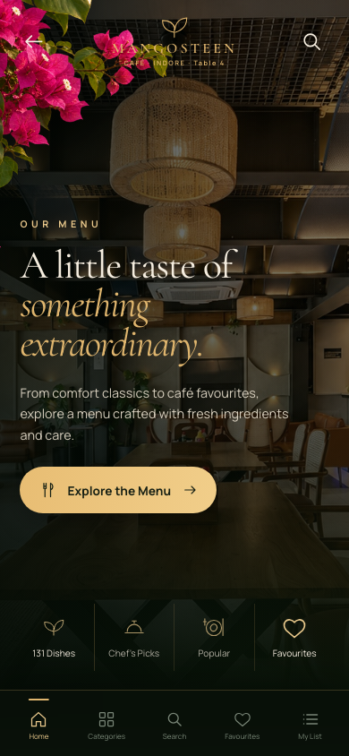
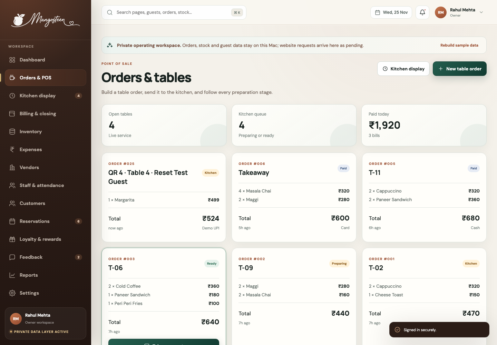
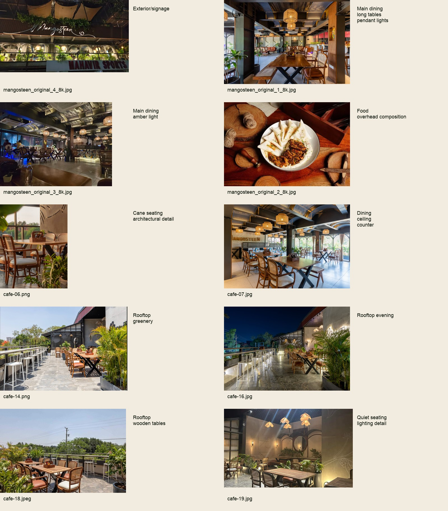
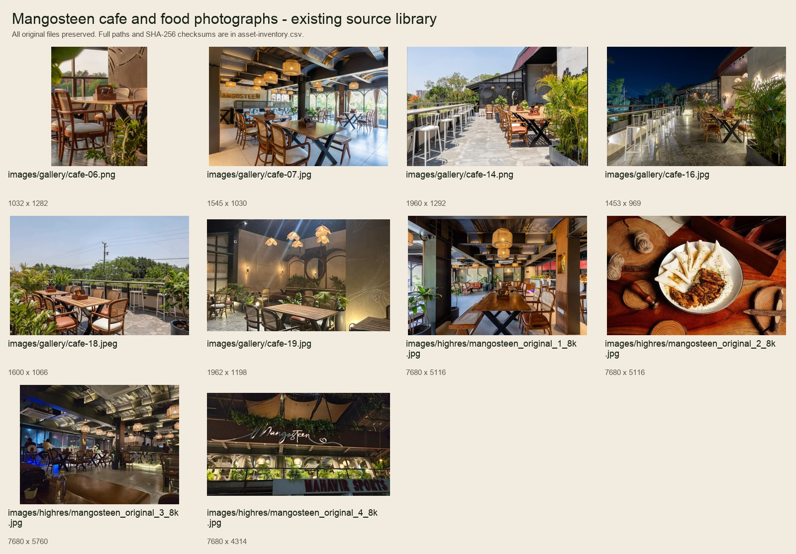
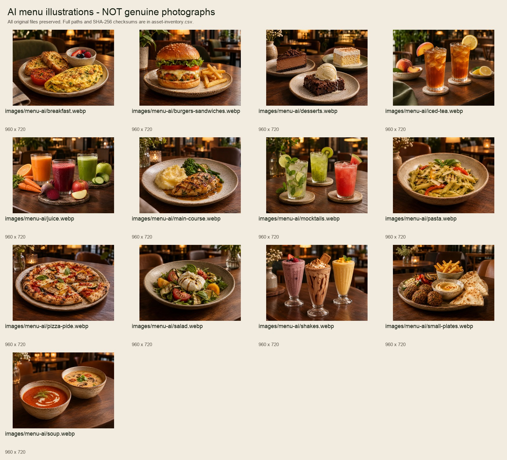
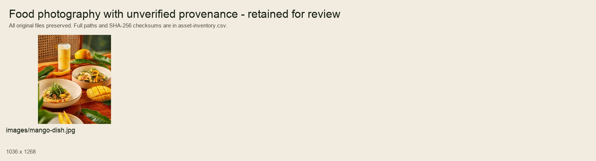

LOCAL REVIEW · 25 NOVEMBER 2026 · NOT DEPLOYED
Mangosteen.
The cinematic rebuild.
Original café photography, a reversible architectural mask, independent culinary interaction and the existing business experience. Visual approval remains pending.
Tested implementation 02e9ce4 · branch mangosteen-clean-rebuild. All 83 protected file hashes match the baseline. Build, 9 backend tests and browser workflow checks pass. Genuine named dish cutouts and a sharper exterior remain the principal visual asset gaps.
Watch the experience
Recordings show actual Chrome interactions. Full journeys scroll forward; the desktop recording also reverses the arch. Separate interaction clips show input-driven behaviour.
Reference comparison
Left: supplied Velvet Hour recording. Right: local implementation. Timings and content differ; these players are for visual comparison, not a claim of frame-perfect parity. The source briefly switches to the rejected local website at 15–16 seconds; that portion was excluded from the reference specification.
Motion parity checklist
Desktop and mobile composition


Full-page static captures use reduced motion so no below-the-fold reveal is hidden: desktop · mobile.
Viewport captures (no horizontal document overflow): 320×568 · 360×800 · 390×844 · 430×932 · 768×1024 · 1024×768 · 1440×900 · 1920×1080 · 2560×1440 · 3440×1440 · 3840×2160 · 812×375
Arch progression: 0% · 25% · 50% · 75% · 100%
Measured local performance
Actual CDP encoded network transfer with cold HTTP cache, no CPU/network throttling, local production preview. Mobile is Chrome touch emulation on a Mac. These measurements do not establish physical-phone performance or field Core Web Vitals. No mobile LCP or INP result is claimed. MP4 frame rate is independent of measured browser rendering.
Protected business regression
131 dishes and 13 categories are unchanged. Search, favourites, shortlist, Table 4 demo order, reservation request, CRM authentication, dashboard, queues and settings were tested with a disposable real Python/SQLite backend. No production data was touched.
Compare protected screens before / after
menu-landing
 BeforeAfter
BeforeAftermenu-categories
 Before
Before
Aftermenu-table-4

Before After
Afterreservation-mobile
crm-orders

Before After
AfterPhotography and asset audit
Genuine café photographs remain unchanged. The new hero and section images are optimized WebP derivatives. The existing named food portraits are explicitly labelled illustrative. No reference footage or unauthorized reference assets appear in the application.

Full retained asset-audit contact sheets





Limits and reproducibility
The local /crm-api target at port 4173 is occupied by an existing Vite preview rather than the CRM API. Manual live submissions are not verified against that port. Regression submissions used an isolated backend. A protected phone-field regex warning also predates this rebuild. Neither protected configuration nor business logic was changed.
MANGOSTEEN — CINEMATIC REBUILD REVIEW
25 November 2026 · Local only · Visual approval pending
INSPECT
Homepage: http://127.0.0.1:5173/
Protected menu: http://127.0.0.1:5173/menu
Table 4: http://127.0.0.1:5173/menu?table=4
Review: http://127.0.0.1:5173/artifacts/mangosteen-clean-rebuild-review/index.html
Production-build inspection server: http://127.0.0.1:4174/
GIT RECOVERY
Active branch: mangosteen-clean-rebuild
Legacy checkpoint: mangosteen-legacy-frontend-backup at a89e67c
Clean foundation: checkpoint/clean-foundation-080966f at 080966f
First implementation: 8767a96
Tested implementation: 02e9ce4
Review evidence is committed separately after that implementation. Use git log -1 for its exact reference.
Earlier branches/history and protected source are preserved. Nothing deployed.
IMPLEMENTED
New isolated marketing root, authentic cafe arch, independent editorial photography,
circular food composition, interactive rotating dining table, architectural rail/viewer,
canvas glass wiping, rooftop collage, circular reservation invitation, persistent
navigation, focus-managed mobile drawer and marketing-only exit transition.
Responsive WebP derivatives and portrait crop; no original assets overwritten.
No rejected marketing components imported. No Blender, paid API or reference assets
in the application. GSAP/ScrollTrigger is the single new motion dependency.
REGRESSION EVIDENCE
83 protected source/config/API files match baseline SHA-256 values exactly.
131 dishes / 13 categories preserved. Search, persistent favourites, selection,
Table 4 demo order submission, complete mobile reservation, pending reservation queue,
CRM login/dashboard/order queue/settings tested against the actual Python API with
a disposable database. No production/customer database was modified.
9 of 14 protected screenshots are pixel-identical. Others have tiny
rendering/translucent-background differences; see protected-image-comparison.json.
The reservation is still a REQUEST awaiting staff confirmation.
BUILD AND TESTS
npm run check: TypeScript/Vite production build PASS, CRM JS syntax PASS, 9/9 Python tests PASS.
npm run build:vercel: production build and CRM client packaging PASS. This does not deploy.
Marketing browser suite: 7 groups PASS; 5 supplementary interaction groups PASS.
Protected browser suite: 5 groups PASS. No new page errors or bad HTTP responses.
No lint command is configured; TypeScript, git diff --check and existing checks were used.
MEASUREMENTS
Desktop initial/full transfer: 746,211 / 2,458,389 bytes.
Mobile initial/full transfer: 704,765 / 1,802,371 bytes.
Desktop LCP: 512 ms; observed layout-shift sum 0.00374.
Mobile observed layout-shift sum 0.00000; mobile LCP not captured.
Both recorded scroll runs: median rAF interval 16.7 ms, p95 16.8 ms,
zero intervals over 25 ms, zero observed long tasks.
Measured on local Mac Chrome, cold HTTP cache, no network/CPU throttling.
Mobile is 390x844 touch emulation on the same Mac. These are not physical-device,
field Core Web Vitals, INP, GPU dropped-frame counts or production-network guarantees.
Network is CDP encoded transfer through the full scroll journey, excluding separately
opened menu/CRM/map and reference/evidence downloads. Video captures are 25fps browser
recordings converted to 30fps MP4; that encoding rate is not rendering performance.
LIMITATIONS
1. The upscaled original exterior remains soft; a sharper camera original is needed.
2. Five named dish photos are existing labelled illustrative Pexels images, not genuine
Mangosteen servings. Actual dish cutouts, coffee and ingredient layers are missing.
No fake ingredient effects or invented menu claims have been added.
3. Local /crm-api expects port 4173, currently occupied by an existing Vite preview
instead of the CRM API. Manual live submissions at :5173 are not verified against
that occupied port. Business tests route to an isolated real CRM server instead.
Protected configuration and running unrelated services were not changed.
4. Existing protected phone-input pattern [+0-9 ()-]{7,24} triggers a Chromium
v-mode regex warning; it also exists in the baseline. Booking flow test still passes.
5. No physical-device, Safari/Firefox, field-CWV or production-backend verification.
6. This implements observed reference motion with original assets/code; exact parity
and creative approval are not claimed. Final visual approval is yours.
ASSET PROVENANCE
Supplied cafe originals are retained unchanged. New derivatives in public/marketing/.
See asset-usage.json, original-photo-contact-sheet.jpg and full retained contact sheets.
Named food attribution is copied from existing public/images/menu/README.md. These
files were not newly purchased; no fresh legal ownership verification is claimed.
Reference footage is review-only and is not served as an application asset.
REPRODUCE
npm run check
npm run build:vercel
node scripts/verify-marketing-business.mjs after (dev server :5173)
node scripts/review-marketing-motion.mjs (preview server :4174)